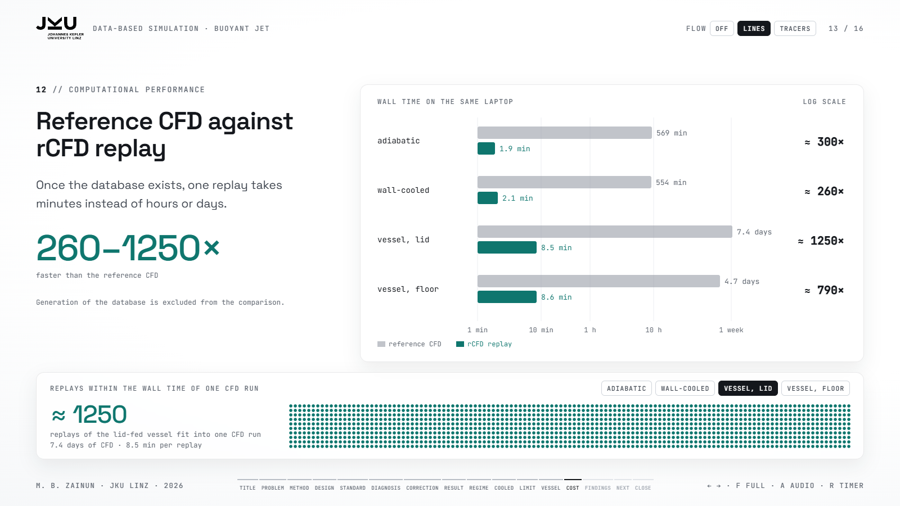
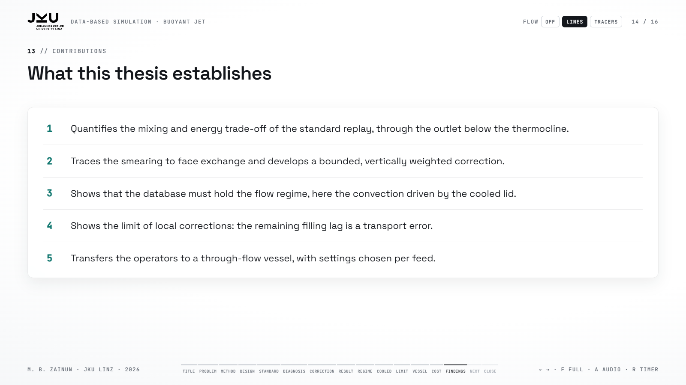
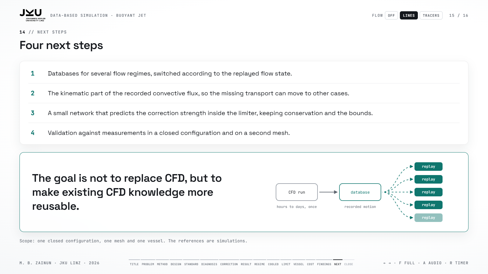
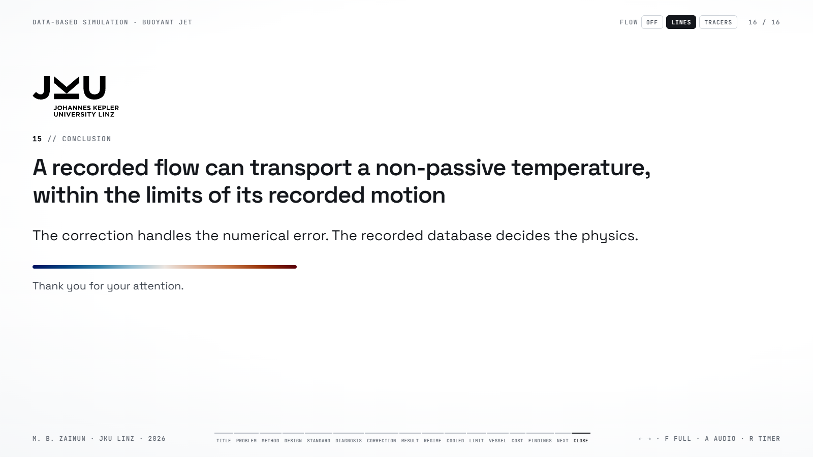

Thesis defense: Data-based Numerical Simulation of Buoyant Jet Flow
open the deck · PDF guide · 2303 words
Whole talk
Slide 1 · Introduction0:40

Good morning, and thank you for being here. My name is Mochamad Bukhori Zainun, and today I will present my master's thesis, supervised by Professor Stefan Pirker: Data-based Numerical Simulation of Buoyant Jet Flow.
This thesis studies whether a recorded flow can carry a temperature that pushes back on the flow.
I will follow the work step by step: the problem and the method, the closed configuration with an adiabatic and a cooled lid, a laboratory vessel, and finally the cost and the main findings.
- Greeting, name, supervisor, title.
- Topic: a recorded flow carrying a temperature that pushes back.
- Route: problem, method, two lids, vessel, cost, findings.
Slide 2 · The central problem1:00

In conventional CFD, temperature and velocity affect each other.
Warm water is lighter, so it rises. This buoyancy changes the velocity, and the new velocity transports the temperature again. The buoyancy term in the momentum equation closes this loop.
To make the simulation faster, Recurrence CFD, or rCFD, skips the momentum equations and reuses a recorded flow. This works well when the temperature is a passive scalar, so when it does not act back on the flow. In my cases, it is not passive. The temperature drives the flow, and the recorded motion may no longer represent it.
Therefore, my thesis looks at three things: where rCFD works well, where it fails, and how it can be improved.
- Coupling: temperature and velocity affect each other.
- Warm is light, rises, changes velocity, carries T again.
- Buoyancy term closes the loop.
- rCFD: recorded flow, fine for a passive scalar.
- My cases: non-passive, T drives the flow.
- Thesis: where it works, where it fails, how to improve.
Slide 3 · The rCFD method1:00

Let me briefly explain the method. First, we run a normal CFD simulation and record how the fluid moves between cells. This motion is stored as cell-to-cell maps, one per second of flow.
During the replay, these maps transport the temperature without solving the momentum equations again. The maps do not capture all of the mixing, so the standard replay adds face exchange between neighbouring cells, with one free strength, f s d. A global conservation constraint then corrects the total energy.
In my thesis, I add one more step between face exchange and the constraint: a correction stage. What this step must do follows from a diagnosis of the errors.
- Record: CFD → cell-to-cell maps, one per second.
- Replay: maps transport T, no momentum equations.
- Standard: face exchange (f_sd) + global conservation.
- My step: a correction stage, designed from a diagnosis.
Slide 4 · Study design1:00

I started with a small closed configuration: 75 by 75 by 15 millimetres with an inlet and an outlet channel, and 85,625 cubic cells of one millimetre. A warm jet at 333 kelvin enters fluid at 293 kelvin for 315 seconds. The Reynolds number is about 100, so the flow is laminar, and the reference simulation needs 569 minutes on a laptop.
I used two conditions on the lid. With an adiabatic lid, the recording and the reference represent the same flow, so any deviation of the replay is numerical. With a cooled lid, the cooled liquid sinks and creates motion of its own. Comparing the two separates numerical errors from missing motion. Finally, I applied the method to a laboratory vessel.
- 75 × 75 × 15 mm, 85 625 cells of 1 mm.
- Jet 333 K into 293 K for 315 s, Re ≈ 100, laminar, 569 min.
- Adiabatic lid: same flow, errors are numerical.
- Cooled lid: motion of its own.
- Then: laboratory vessel.
Slide 5 · The standard replay1:20

Let us start with the adiabatic case and the standard replay. Its only free parameter is the face-exchange strength. I tested seven values, from zero, which means recorded advection alone, up to three.
The two integral measures disagree. The mean temperature is most accurate with little or no added mixing, with a root mean square error of 1.07 kelvin. The height of the heat, the centre of gravity, is best near 0.5.
The reason is the outlet, just below the thermocline. During the warm inflow, numerical diffusion moves heat from the warm current into the cold fluid below, so the outflow is too cold and the configuration keeps too much heat. After the inflow, the outlet draws warm fluid that diffusion has pushed across the thermocline, so the configuration loses too much heat.
So no single mixing strength serves both measures. This answers my first research question, and it leads to a diagnosis of the smearing.
- Seven strengths, from 0 (advection alone) to 3.
- Mean T best with little mixing: 1.07 K.
- Centre of gravity best near 0.5.
- Outlet below the thermocline: too cold in, too warm out.
- No single strength serves both (Q1).
Slide 6 · Diagnosis: where the smearing comes from1:20

The montage shows the stored states of three runs: the reference, the replay with the recorded maps alone, and the standard replay. After the first minute, the maps alone keep the thermocline as thin as in the reference, between about two and four millimetres. So the recorded motion is not the problem. Without face exchange, however, the upper layer keeps unmixed pockets, so face exchange cannot simply be removed.
The standard replay reaches about 20 millimetres during the inflow and ends with 15.7 millimetres, about three times the reference. The source is face exchange. At a strength of 0.5 it acts like a diffusivity ten times the molecular value, and a sharp interface under such a diffusivity grows to about 20 millimetres in two minutes.
In the reference, stable stratification suppresses vertical motion across the thermocline, with a buoyancy frequency of 5.8 per second. Face exchange ignores this and mixes equally in all directions. The jet needs this mixing, but the thermocline does not. So the fix is not to remove face exchange, but to undo its effect across the thermocline.
- Maps only: 2 to 4 mm, motion is not the problem.
- No face exchange: unmixed pockets.
- Standard: 15.7 mm, three times the reference.
- Face exchange ≈ 10 × molecular, ~20 mm in 2 min.
- Reference stratified, N = 5.8 per s; jet needs mixing, thermocline does not.
Slide 7 · The correction1:25

The correction moves heat back up the local gradient, across the thermocline. It is conservative: each exchange moves the same energy out of one cell and into its neighbour. A local-bounds limiter of the Zalesak type keeps every cell within the range of its neighbours, so no new extremes appear, as long as the strength stays within its bound of one half. And it is weighted towards the vertical, because the thermocline is nearly horizontal. The animation shows the idea on a model front: plain negative diffusion leaves the data range, while the limited correction sharpens the front and stays inside it.
The direction matters more than the strength. Without a weight, the correction reaches the reference thickness only at s equal to 0.9, with grid-scale oscillations. The gradient-weighted form steepens perturbations along the interface, and its trace error stays at 0.96 kelvin. The vertical weight works within its guaranteed range: 5.3 millimetres at s equal to 0.40 and 4.0 at 0.50, which brackets the reference of 5.0 millimetres. The trace error falls from 1.46 to between 0.70 and 0.59 kelvin. This answers my second research question.
- Conservative exchange, up the local gradient.
- Zalesak-type limiter, no new extremes within s ≤ 1/2.
- Vertical weight: the thermocline is horizontal.
- Unweighted: s = 0.9, oscillations; gradient form steepens perturbations.
- Vertical: 5.3 / 4.0 mm brackets 5.0 mm; 1.46 → 0.70–0.59 K (Q2).
Slide 8 · Result in the adiabatic case1:10

Here is the result, the CFD on the left and the extended replay on the right. At the end of the run, the thermocline is 5.0 millimetres in the CFD and 5.3 millimetres in the replay at s equal to 0.40.
The correction also fixes the heat content, because a sharp thermocline puts the right fluid at the outlet. Over the last twenty seconds, the outlet temperature agrees with the reference within 0.1 kelvin, and the final deviation of the mean temperature drops from 1.69 to 0.35 kelvin. At s equal to 0.5, the mean absolute difference on the mid-plane falls from 4.00 to 0.85 kelvin, and the buoyancy frequency returns to within 0.5 per second of the reference.
So when the database holds the right motion, a bounded correction repairs the numerical error. The next question is what happens when it does not.
- CFD left, extended right: 5.0 against 5.3 mm.
- Outlet within 0.1 K; end deviation 1.69 → 0.35 K.
- Mid-plane 4.00 → 0.85 K at s = 0.5; N within 0.5 per s.
- Bridge: what if the database lacks the motion.
Slide 9 · The cooling regime1:20

Now the lid is cooled. The cooled liquid becomes denser and sinks, and warmer liquid rises to replace it. Since the replay applies the wall heat loss on its own, one database could in principle serve both lids. With the adiabatic database, however, the lid removes only 63 per cent of the reference heat loss, and the run ends 2.08 kelvin too warm. Stronger mixing or the correction raise this only to 64 to 67 per cent.
The stored states show it. On the mid-plane, the replay on the adiabatic database is up to 3 kelvin warmer than the CFD, and still 1.9 kelvin warmer at the end. The reason is physical. The wall term removes heat in proportion to the temperature difference to the surroundings. Without recorded sinking motion, nothing carries the cooled fluid away, a cold film forms under the lid, and the heat loss limits itself.
The recurrence matrices confirm it. Under cooling, frames one second apart differ about ten times more, because the lid drives an inverted Rayleigh–Bénard convection with a Rayleigh number of 1.5 to 2.5 times ten to the seven. A recording without cooling cannot contain this motion. So a database belongs to a cooling regime, and I recorded it again under cooling.
- Adiabatic database: 63 %, 2.08 K too warm; 64–67 % with mixing or correction.
- Wall term ∝ ΔT: cold film, self-limiting.
- Recurrence: ~10 × faster renewal under cooling.
- Inverted Rayleigh–Bénard, Ra 1.5–2.5 × 10⁷.
- Database belongs to a regime → record again.
Slide 10 · Result with the cooled database1:15

With the database recorded under cooling, the standard replay removes 98 per cent of the lid heat loss and ends only 0.66 kelvin too cold. But the heat is in the wrong place: the bulk is too warm, the thermocline and the top layer too cold, and the thermocline is three times too thick during the inflow.
The same correction, with a static-stability criterion, improves every measure. At its working strength of about 0.55, the run ends within 0.06 kelvin of the reference, and the end-profile error drops from 2.79 to 0.41 kelvin. This strength lies just above the bound of one half, so the final clamp can become active.
The montage compares the CFD with the extended replay on the cooled database at the stored states, and the replay follows it. The correction even restores part of the plume structure, three plumes under the lid instead of one, against nine in the reference. The plumes are already in the recorded transport; the correction makes them visible again.
- Standard: 98 %, 0.66 K too cold, heat in the wrong place.
- Correction s ≈ 0.55: within 0.06 K, profile 2.79 → 0.41 K.
- s above the bound 1/2: clamp can act.
- Plumes: 9 reference, 1 standard, 3 corrected.
Slide 11 · The limit of local corrections1:10

One error remains after every local correction. During filling, the heterogeneity of the replay lags behind the reference by 2.25 kelvin, and the traces meet only after the inflow. I tested four variants: a joint study of the wall multiplier and the strength, a Richardson-number weight, several passes, and a reversed diffusivity weight. None reduced this error.
Rules that move heat only between neighbouring cells cannot recover heat that is in the wrong layer at the wrong time. So this is a transport error. As a test, I applied the recorded vertical convective flux. It reduces the error from 2.25 to 0.45 kelvin, which supports the diagnosis. But the run then ends 0.86 kelvin too cold, through the single-compartment conservation constraint, and the flux belongs to one run only. So it remains a diagnostic, not part of the method.
- Filling lag: 2.25 K, traces meet after the inflow.
- Four variants fail.
- Wrong layer, wrong time → transport error.
- Flux test: 2.25 → 0.45 K, ends 0.86 K too cold; diagnostic only.
Slide 12 · Application to a through-flow vessel2:10

Finally, I applied the operators to a second buoyant flow, the through-flow vessel of the laboratory rig. It is 195 millimetres wide and 250 millimetres high, fed through eight openings at two heights and drained at half height. The reference simulations use the k-omega SST turbulence model. I recorded one database in the lid-fed case and replayed both cases with it.
The two cases need different operators. With the lid feed, a warm layer forms, so a weak vertically weighted correction keeps it thin, with down-gradient mixing below the lid after the pulse. With the floor feed, warm water enters below cold water, and the column becomes statically unstable. The lid-fed recording does not overturn it, so a convective adjustment sorts the column instead. This adjustment is not bounded by construction.
Against each reference simulation, the mean error over the seven sensor heights falls from 1.28 to 0.77 kelvin with the lid feed, and from 1.61 to 0.68 kelvin with the floor feed. The best standard replay of the floor feed needs a face-exchange strength of 160, which mixes 12 to 17 times more strongly than the turbulence in the reference and removes almost all structure.
The curves and the montage show what transfers and what does not. On the sensor curves, CFD and the extended replay agree, because each sensor gives one temperature per height and the adjustment keeps warm water above cold water. In the port plane, the reference carries the warm floor feed up the wall in two plumes, while the replay carries it along the floor and up the axis, the path of the neutral floor jet in the lid-fed recording. So the replay gets the layering right, but not the path.
- Vessel 195 × 250 mm, 8 openings, drain at half height, SST.
- One lid-fed database for both feeds.
- Lid: weak vertical correction + down-gradient mixing.
- Floor: unstable column → convective adjustment, not bounded.
- 1.28 → 0.77 K and 1.61 → 0.68 K; standard f_sd = 160 is 12–17 × turbulent mixing.
- Layering right, path wrong.
Slide 13 · Computational cost0:50

Besides accuracy, computational cost is also important.
In the adiabatic closed case, the reference simulation took 569 minutes. The standard replay took only 2.16 minutes. The extended replay took about 1.9 minutes.
This means that the standard replay is about 260 times faster. The extended replay is about 300 times faster.
So, the correction keeps the main speed advantage of recurrence CFD. In the vessel, a replay took about eight and a half minutes, against 7.4 and 4.7 days for the reference simulations. These reference times include rendering at every step, so the vessel ratios are upper estimates.
However, this advantage applies to repeated replays. We still need one conventional CFD simulation to create the database.
- Computational cost: selain akurasi, waktu penting.
- Reference: 569 min.
- Standard replay: 2.16 min, about 260×.
- Vessel: 8.5 min against 7.4 and 4.7 days, upper estimates.
- Extended replay: 1.9 min, about 300×.
- Conclusion: still fast, database needs one CFD run.
Slide 14 · Contributions0:35

To summarise, this thesis has five main findings.
First, the standard replay has a trade-off between energy retention and temperature stratification.
Second, my correction reduces numerical diffusion while keeping the temperature within local limits.
Third, the database must represent the correct flow regime.
Fourth, local corrections cannot replace motion that is missing from the database.
Fifth, the correction methods can be used in other configurations, but their settings must be adjusted.
- Trade-off: energy retention vs stratification.
- Correction: less diffusion, local limits respected.
- Database: must match the flow regime.
- Missing motion: not replaced by local correction.
- Transfer: works elsewhere, settings change.
Slide 15 · Next steps1:00

From here, I see four next steps. First, databases for several flow regimes, switched according to the replayed flow state, could supply the motion that a single recording lacks.
Second, recording only the kinematic part of the convective flux could make the missing transport transferable to other cases.
Third, a small network could predict the correction strength from the replayed field and act inside the limiter, so that conservation and the local bounds are kept.
Fourth, the method should be validated against measurements in a closed configuration and on a second mesh. The references here are simulations, and with the lid feed the reference itself departs from the rig by up to 6.2 kelvin at the top sensors.
The goal is not to replace CFD, but to make existing CFD knowledge more reusable.
- Databases per regime, switched by flow state.
- Kinematic part of the flux.
- Small network inside the limiter.
- Validation: measurements, closed configuration, second mesh; lid reference up to 6.2 K off the rig.
- Goal: reuse CFD knowledge.
Slide 16 · Conclusion0:40

So, a recorded flow can carry a temperature that also changes the flow, but only under certain conditions.
The correction removes the numerical part of the error. The recorded database decides the physical part.
This is the main finding of my thesis. The accuracy of recurrence CFD depends not only on how we correct the replay, but also on what physical information we record.
Thank you for your attention. I will be happy to answer your questions.
- Answer: yes, under certain conditions.
- Correction: the numerical part.
- Database: the physical part.
- Final message: what we record matters as much as how we correct.
- Thank you, questions.